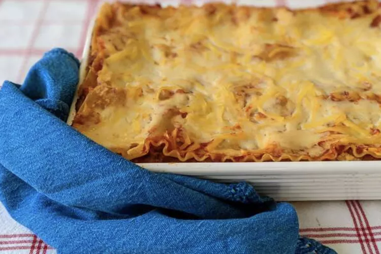

Receta Lasagna
- Volver

Lasaña casera
Esta es la receta de lasaña casera especial de mi mamá con una salsa de tomate carnosa hecha desde cero y un relleno deliciosamente cursi.
Un relleno de lasaña casero más tradicional se haría con ricotta, pero la receta de mi mamá requiere una mezcla de requesón pequeño y parmesano.
Ingredientes
- Carne : Esta receta de lasaña comienza con una libra de carne molida (½ libra de carne molida de cerdo, ½ libra de carne molida magra).
- Cebolla : Se cuece una cebolla picada hasta que esté traslúcida con la carne molida.
- Tomates Enlatados: Necesitarás una lata de salsa de tomate y una lata de tomates triturados.
- Hierbas Frescas: un sabor fresco, pique dos cucharadas de perejil y triture un diente de ajo.
- Azúcar: Un chorrito de azúcar equilibra toda la acidez de los tomates.
- Especias y Condimentos: Esta lasaña casera se condimenta con albahaca seca, orégano seco, sal y pimienta negra.
- Fideos: ¡Por supuesto, necesitarás fideos para lasaña! Esta receta requiere fideos crudos, pero puedes usar la variedad lista para horno para ahorrar tiempo.
- Queos: La capa de queso está formada por requesón y parmesano. También necesitarás mozzarella rallada.
- Huevos: Los huevos hacen que la capa de queso quede más cremosa. Además, actúan como agente aglutinante (lo que significa que mantienen unida la capa).
Preparacion
- Cocine la Carne: Cocine la carne molida en una sartén hasta que se dore y se desmorone. Agrega la cebolla y continúa cocinando hasta que esté transparente. Agregue los productos de tomate enlatados, la mitad del perejil, el ajo, la albahaca, 1,5 cucharaditas de sal, el orégano y el azúcar.
- Cocer los Fideos: Hervir los fideos de lasaña en agua ligeramente salada hasta que estén al dente.
- Haga la capa de queso: mezcle el requesón, el queso parmesano, los huevos, el perejil restante, la sal restante y la pimienta en un bol.
- Armar la Lasagna: Coloque en capas los ingredientes según la receta (comenzando con salsa y terminando con mozzarella) hasta que la lasaña esté ensamblada.
- Hornear la LasagnaCubrir con papel aluminio y hornear en el horno precalentado durante aproximadamente media hora. Retire el papel de aluminio y continúe horneando hasta que la parte superior esté dorada.
TIempo de Coccion
En un horno precalentado a 375 grados F, esta lasaña casera debe hornearse perfectamente en unos 50 minutos (30 a 40 minutos tapada, 5 a 10 minutos descubierta).
